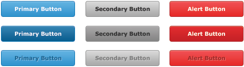

Buttons
As a convenience, buttons should only be used for actions, while hyperlinks are to be used for objects. For instance, "Download" should be a button while "recent activity" should be a link.
Button styles can be applied to anything with the .button class applied. However, typically you'll want to apply these to only link and button elements.

Button Classes
There are 4 button classes:
- Primary button = used for generic or simple actions such as "Add" or "View".
- Secondary button = used as an alternative action of a form such as "Cancel" or "Close".
- Success button = used to initiate a "Create" or "Save" actions. Great examples of these buttons can be for "Save" or "Create" state buttons.
- Alert button = used as buttons that are destruction actions such as "Delete" or "Remove".
Button States
There are 3 button states:
- Normal = when the button is not touched and unhovered.
- Hover = when the button is hovered by a mouse, press/click on, and by touch (on a touch screen).
- Disabled = when the button is disabled so that it cannot be interacted with.